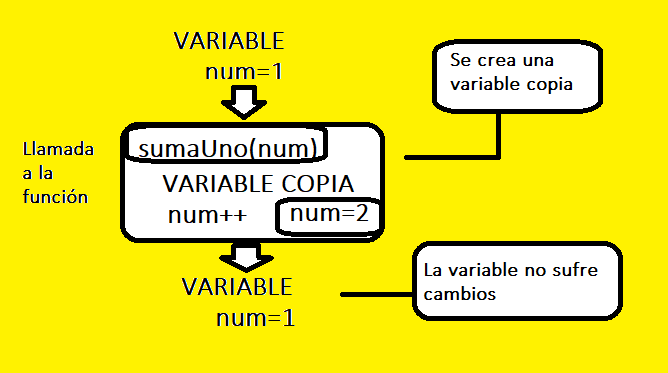
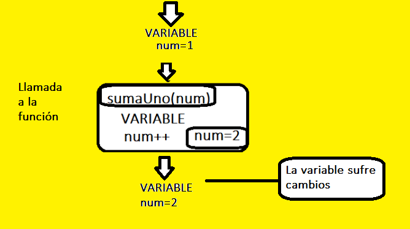

Introducción a los métodos en Java¶
Los métodos sirven para hacer nuestro código más legible, más fácil de mantener y sin código duplicado. Es habitual tener que utilizar en distintas partes la misma funcionalidad, lo que implica:
- Duplicidad del código
- Dificultad en el mantenimiento si hay un cambio en la duplicidad del código.
Todo el tiempo hemos estado usando un método llamado main, dentro de él se encuentran todas las sentencias que hemos ido ejecutando, ahora vamos a crear nuestros propios métodos teniendo en cuenta:


Los métodos se alinean unos debajo de otros, no se puede insertar un método dentro de otro método, y además deben estar dentro de la clase.
Parámetros de entrada¶
Una función puede definirse para que reciba tantos datos como necesite. Por ejemplo, un función que multiplique dos números, tendrá dos parámetros
static int multiplicar(int x, int y){
return x*y;
}
int res=multiplicar(45, 2)
Función sin parámetros¶
Una función puede no necesitar parámetro. Por ejemplo, si queremos mostrar un menú
static int muestraMenu() {
Scanner sc = new Scanner(System.in);
int opc;
do {
System.out.println("1-Jugar");
System.out.println("2-Cambiar opciones");
System.out.println("3-Salir");
opc = sc.nextInt();
} while (opc < 1 || opc > 3);
return opc;
}
podríamos llamar a la función
int opc=muestraMenu();
switch (opc){
case 1:
jugar();
break;
case 2:
opciones();
break;
case 3:
salir();
break;
}
Valores devueltos por la función. Sentencia Return¶
Un valor devuelto es información que un método devuelve al código que lo llamó. Cada método solo puede devolver un valor: cuando un método regresa, deja de ejecutarse (y continuamos donde lo dejamos antes de llamar al método). Para que el código que llamó al método use el valor devuelto, el valor devuelto debe almacenarse en una variable o usarse inmediatamente.
public static type methodName(parameters) { // llamar a nombre de método devuelve expresión
...
return expression;
}
type variableName = methodName(parameters); // variableName almacena el valor de retorno
Ejemplo
public class Main {
public static void main(String[] args) {
boolean gameOver = true;
int puntuacion = 5000;
int nivelCompletado = 5;
int bonus = 10;
int score = calcularPuntuacion(gameOver, puntuacion, nivelCompletado, bonus);
System.out.println(score);
//otra forma de hacerlo es pasarle directamente el valor de las variables
score = calcularPuntuacion(true, 1000, 10, 30);
System.out.println(score);
}
public static int calcularPuntuacion(boolean gameOver, int puntuacion, int nivelCompletado, int bonus) {
if (gameOver) {
int puntuacionFinal = puntuacion + (nivelCompletado * bonus);
puntuacionFinal += 100;
return puntuacionFinal;
} else {
return -1;
}
}
//OTRAS FORMAS MÁS EFICIENTES DE CREAR EL MÉTODO calcularPuntuaciones
//1. Método más eficiente sin sentencia else
public static int calcularPuntuacion(boolean gameOver, int puntuacion, int nivelCompletado, int bonus) {
if (gameOver) {
int puntuacionFinal = puntuacion + (nivelCompletado * bonus);
puntuacionFinal += 100;
return puntuacionFinal;
}
return -1;
}
//2. Otra forma de realizar el método calcularPuntuacion sin utilizar dos sentencias de return sería
public static int calcularPuntuacion(boolean gameOver, int puntuacion, int nivelCompletado, int bonus) {
int puntuacionFinal = -1;
if (gameOver) {
int puntuacionFinal = puntuacion + (nivelCompletado * bonus);
puntuacionFinal += 100;
}
return puntuacionFinal;
}
}
Funciones que no devuelven valor: void¶
Si una función no devuelve ningún valor, tenemos que indicarlo mediante void. Por ejemplo, una función que imprima la tabla de multiplicar de un número
static void tablaMultiplicar(int n) {
for(int i=1;i<=10;i++){
System.out.println(i+"x"+n+ "= "+i*n);
}
}
Paso de argumentos por valor o por referencia¶
En programación hay dos formas de paso de parámetros a un método: por valor o por referencia.
Paso por valor¶
El paso de parámetros por valor consiste en copiar el contenido de la variable que queremos pasar en otra dentro del ámbito local de la función. Se tendrán dos valores duplicados e independientes, con lo que la modificación de uno no afecta al otro.

Paso por referencia¶
Cuando se invoca al método se crea una nueva variable (el parámetro formal) a la que se le asigna la dirección de memoria donde se encuentra el parámetro actual. En este caso el método trabaja con la variable original por lo que puede modificar su valor.

Lenguajes como C, C++, C#, php, VisualBasic, etc. soportan ambas formas de paso de parámetros.
Paso de parámetros en Java: Por valor¶
Java solo soporta el paso por valor.
Cuando el argumento es de tipo primitivo (int, double, char, boolean, float, short, byte), el paso por valor significa que cuando se invoca al método se reserva un nuevo espacio en memoria para el parámetro formal. El método no puede modificar el parámetro actual.
Como veremos más adelante, cuando se trata de objetos, se envía la copia a la dirección al objeto, por los que si se modifica el objeto en el método, se modifica el objeto original.
En el caso de los String, es un excepción. Los String son inmnutable, esto quiere decir, que si se modifica el objeto, se crea un nuevo String en vez de modificar el original.
static void saluda(String nombre){
//crea un nuevo objeto String
nombre="Hola "+nombre;
System.out.println(nombre);
}
public static void main(String[] args) {
String nombre"Pepe";
//imprime Hola Pepe
saluda(nombre);
//imprime Pepe
System.out.println(nombre);
}
Hola Pepe
Pepe
Nomenclatura de métodos en Java¶
En general se utilizarán verbos para nombrar a los métodos, describiendo la acción que realizan.
La primera letra del nombre se escribirá en minúscula y el resto de primeras letras de cada palabra interna en mayúscula. Ejemplos de este tipo de nomenclatura pueden ser:
mostrarTablaMultiplicar(5)
mostrarNumerosPrimos(9)
esPrimo(7)
Documentación de métodos con JavaDoc¶
Introducción¶
Javadoc es una utilidad de Oracle para la generación de documentación de APIs en formato HTML a partir de código fuente Java. Javadoc es el estándar de la industria para documentar clases de Java. La mayoría de los IDEs los generan automáticamente. Como nos dice la Wikipedia.
Etiquetas Javadoc¶
Para generar API con Javadoc han de usarse etiquetas (tags) de HTML o ciertas palabras reservadas precedidas por el carácter "@". Estas etiquetas se escriben al principio de cada clase, miembro o método, dependiendo de qué objeto se desee describir, mediante un comentario iniciado con "/*" y acabado con "/"
/**
* Esto es un comentario para javadoc
*/
| TAG | DESCRIPCIÓN |
|---|---|
| @author | Nombre del desarrollador. |
| @deprecated | Indica que el método o clase es obsoleto (propio de versiones anteriores) y que no se recomienda su uso. |
| @param | Definición de un parámetro de un método, es requerido para todos los parámetros del método. |
| @return | Informa de lo que devuelve el método, no se aplica en constructores o métodos "void". |
| @see | Asocia con otro método o clase. |
| @version | Versión del método o clase. |
Las etiquetas @author y @version se usan para documentar clases e interfaces. Por tanto no son válidas en cabecera de constructores ni métodos. La etiqueta @param se usa para documentar constructores y métodos. La etiqueta @return se usa solo en métodos de tipo función.
Ejemplo JavaDoc¶
/**
* Esta función cuenta el número de palabras en un String.
*
* @param texto El String del cual contar las palabras.
* @return El número de palabras en el String.
*/
public static int contarPalabras(String texto) {
if (texto == null || texto.isEmpty()) {
return 0;
}
// Dividir el texto en palabras usando espacios en blanco como delimitador.
String[] palabras = texto.split(" ");
return palabras.length;
}